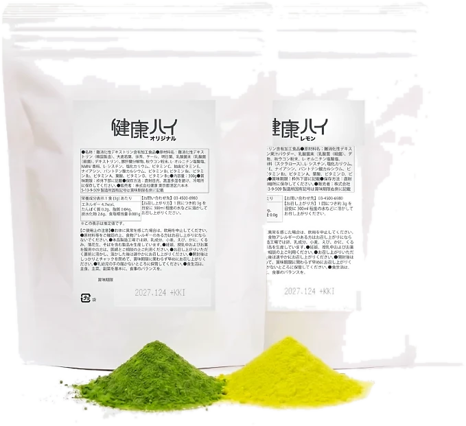
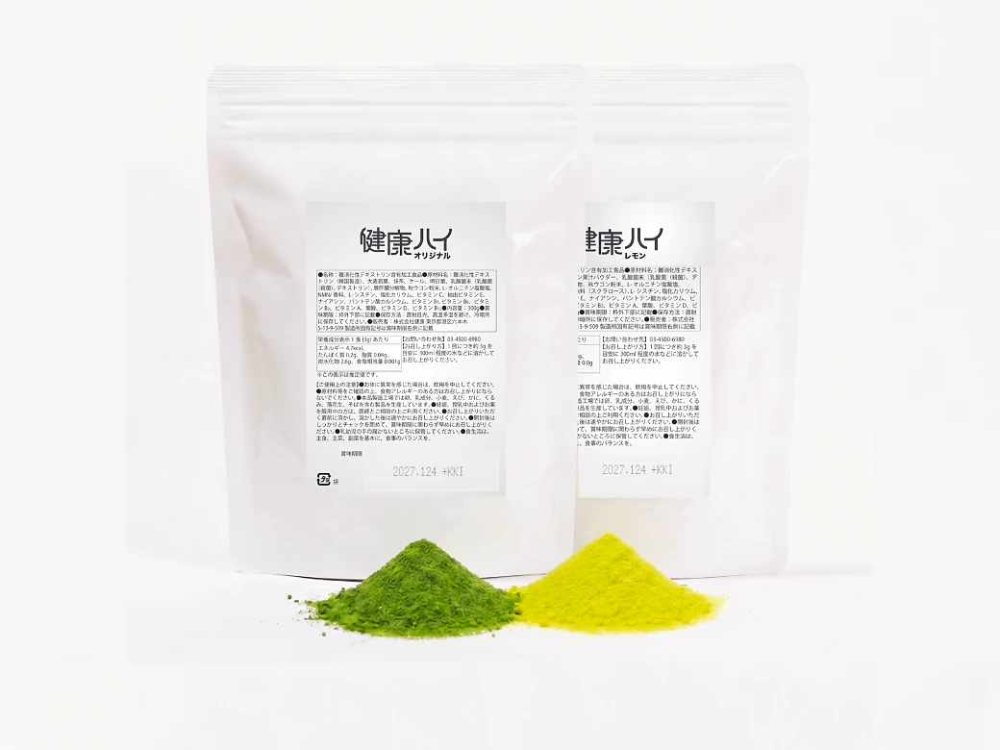
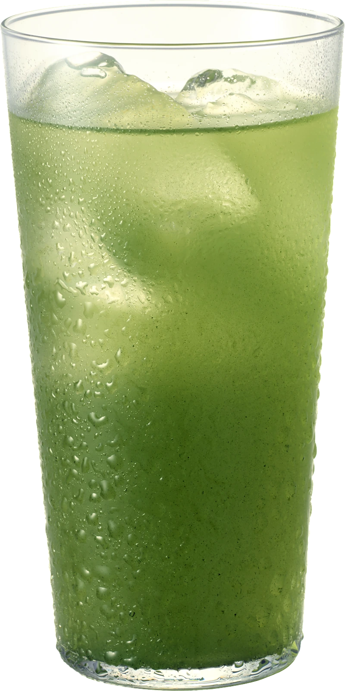
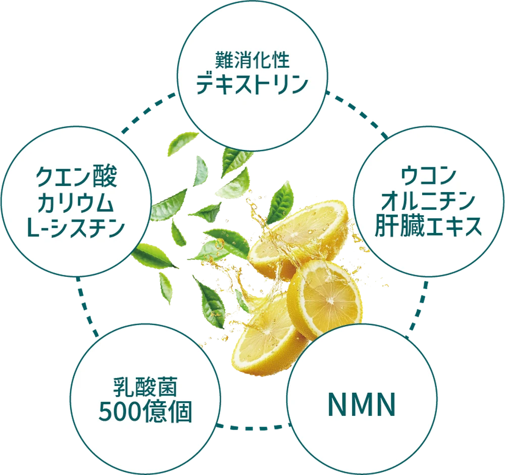
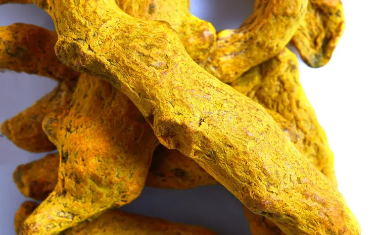
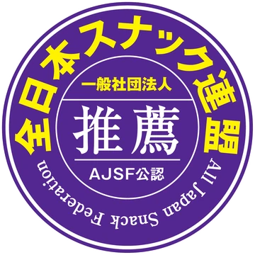
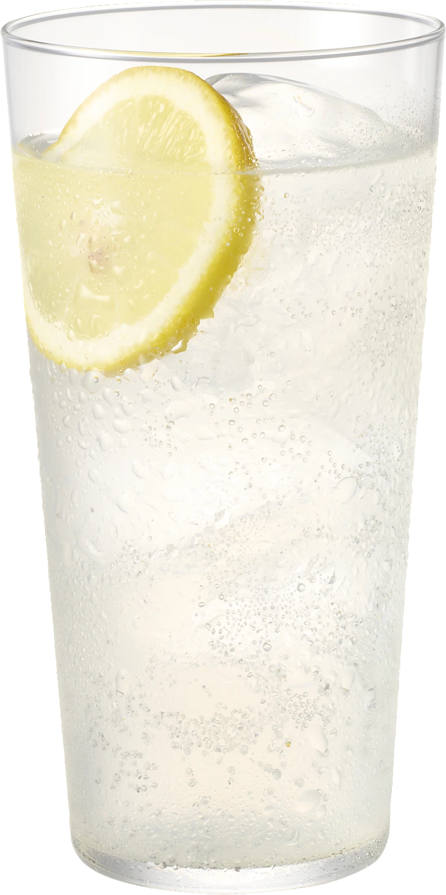

昼水に溶かして
オフィスにも、
持っていけます。
粉末なので、水筒やマイボトルに溶かして持ち運べます。職場に一袋置いておく、という使い方も。水でもお湯でも溶けるので、季節を選びません。食事のバランスや野菜不足が気になる方に。
一般社団法人 全日本スナック連盟
公式スポンサー
粉末の青汁抹茶 ／ お酒の割材
昼は、水に溶かして。
夜は、晩酌の割材に。
一袋で、一日に二度はたらきます。

やめるのではなく、
一杯の中身を変える。
明日葉・ケール・大麦若葉に、国産の抹茶をあわせました。青汁特有のくせを抑えているので、お茶の感覚でお飲みいただけます。
やることは、いつもの焼酎に小さじ一杯を足すだけ。道具も手間も増えません。お酒を飲まない昼は、水やお湯に溶かしてそのままどうぞ。
休肝日をつくる必要も、飲む量を減らす必要もありません。一袋で、一日に二度はたらきます。

昼水に溶かして
粉末なので、水筒やマイボトルに溶かして持ち運べます。職場に一袋置いておく、という使い方も。水でもお湯でも溶けるので、季節を選びません。食事のバランスや野菜不足が気になる方に。

夜お酒に混ぜて
いつもの焼酎に小さじ一杯。緑茶ハイの感覚で飲める、青汁抹茶ハイになります。晩酌はもちろん、来客のおもてなしや食事どきにも。お酒を飲まない方は、そのまま水や炭酸水で。
焼酎を30〜45ml
氷より先に、グラスへ注ぎます。
健康ハイを小さじ一杯（3g）
付属のスプーンで入れ、よく混ぜます。
氷と、水か炭酸水で割る
オリジナルは水、レモンサワーは炭酸水で。
道具も、手間も増えません。
いつもの晩酌の手順が、ひとつ増えるだけです。

とうもろこし由来の水溶性食物繊維。食事と一緒に摂りたい成分として、広く知られています。
青汁素材に国産の抹茶をあわせた王道のブレンド。くせを抑えているので、お茶の感覚で飲めます。

「飲みの席」の定番として親しまれてきた成分。しじみでおなじみのアミノ酸とあわせて配合しています。
※ 本品は機能性表示食品・特定保健用食品ではありません。特定の効果・効能を保証するものではありません。

健康ハイは、もともと飲食店向けの割材です。毎晩お客様に出す立場のプロに選ばれ、三ヶ月で100店舗へ導入されました。全日本スナック連盟の公式スポンサーでもあります。
★★★★★
50代・男性抹茶の香りがちゃんとします。ちゃんとして美味しいです。
オリジナル（青汁抹茶）をご購入
★★★★☆
40代・女性夫用に買いました。野菜を食べてくれない人なので、こういう形なら文句を言われません。
オリジナル（青汁抹茶）をご購入
★★★★★
30代・男性行きつけのお店で飲んで気に入って、家用に買いました。レモンは炭酸が合います。
レモンサワーをご購入
★★★★★
20代・男性次の日すっきりとして迎えられた。体調が良くなった。
オリジナル（青汁抹茶）をご購入
★★★★★
30代・女性食事に合わせやすくて飲みやすい。毎日一杯飲んでいます。
オリジナル（青汁抹茶）をご購入
※ お客様個人の感想であり、効果を保証するものではありません。
青汁抹茶。水で割って、緑茶ハイの感覚で。和食・中華にもよく合います。

甘さ控えめの王道レモン。炭酸水で割って。焼肉や焼鳥など、こってりした日に。
お酒を入れなければ、
ノンアルコールとしてもお飲みいただけます。
都度購入のみ・定期縛りはありません
健康ハイ 300g
8,000円（税込）
約100杯分／一杯あたり約80円
※ 一杯あたりの金額は健康ハイの粉末のみのものです。お酒代は含みません。
※ 送料・お届け日数は購入ページをご確認ください。
いいえ。健康ハイは粉末の「割材」です。それ自体にアルコールは含まれていません。焼酎などのお酒を割ってお使いいただく商品です。お酒を使わず、水や炭酸水に溶かしてノンアルコールドリンクとしてもお飲みいただけます。
一袋で約100杯分なので、一杯あたり約80円です。これは健康ハイの粉末のみの金額で、お酒代は含みません。
ありません。健康ハイは都度購入のみです。自動で継続して届くことはありませんので、必要なときだけご注文ください。
はい。粉末を水やお湯、炭酸水に溶かすだけで、そのまま青汁抹茶としてお飲みいただけます。健康ハイ自体にアルコールは含まれていません。お酒を飲まないご家族と一袋を分け合って使う、という方もいらっしゃいます。
ベースが抹茶なので、いわゆる「青汁の青くささ」はほとんどありません。緑茶ハイや抹茶ラテが飲める方であれば、問題なくお召し上がりいただけます。まずは少なめの量から調整してみてください。
冷たいお酒に入れると沈みやすいため、専用のマドラーと計量スプーンを同封しています。お酒→粉末→氷→水（炭酸水）の順に入れるのがおすすめです。氷を入れる前の常温のお酒に先に溶かすことで、底に粉が残りません。
粉末タイプなので、常温で保存できます。アルミパックはチャック付きなので、開封後もそのまま閉じて保管いただけます。直射日光と高温多湿を避けて保管してください。賞味期限はパッケージに記載しています。
健康ハイは食品であり、医薬品ではありません。飲酒による影響を防いだり、治したりするものではないため、お酒はご自身の適量の範囲でお楽しみください。妊娠中・授乳中の方、20歳未満の方の飲酒は法律で禁止されています。
味のこと、飲み方のこと、届くまでのこと。
LINEで直接お答えします。
その場で買わなくても構いません。
飲む量を減らさなくていい。我慢しなくていい。
いつもの焼酎に、小さじ一杯を足すだけです。
オリジナル（青汁抹茶）／レモンサワー からお選びいただけます